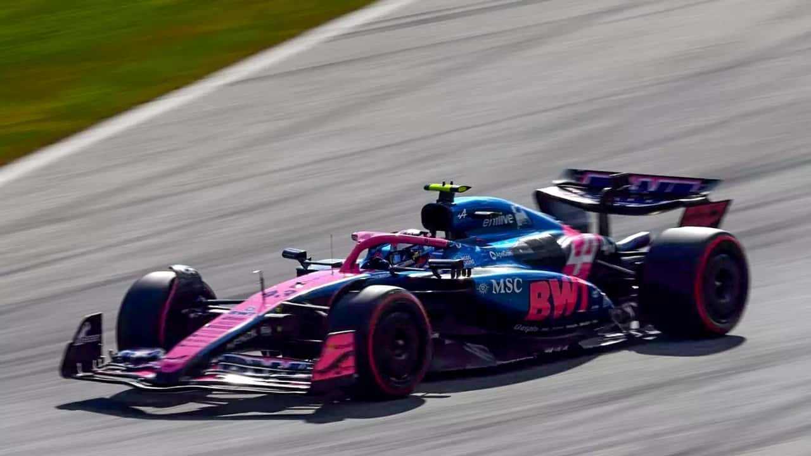

Norris ganó el GP de Austria: Cómo le fue a Colapinto y próxima carrera
Lando Norris se llevó el primer lugar en el Gran Premio de Austria seguido de su compañero de escudería Oscar Piastri y el piloto de Ferrari Charles Leclerc. Franco Colapinto sufrió una sanción durante la carrera.
Este fin de semana se corrió la onceava carrera del calendario 2025 en el circuito
Red Bull Ring en Spielberg, Austria y McLaren volvió a dejar en claro por qué son
los candidatos a llevarse el campeonato de constructores. La escudería británica
logró un 1-2 con Lando Norris y Oscar Piastri en el podio de este domingo y se
encaminan al título.
Para la largada, el neumático preferido por nueve pilotos fue el medio mientras que
Gasly, Colapinto, Hadjar y Hulkenberg decidieron comenzar con gomas blandas.
Los neumáticos jugaron un rol fundamental en la estrategia de los equipos ya que el
calor sofocante en el país perjudicó su vida útil haciendo que la selección de gomas
se volviera más importante que de costumbre.
Por otra parte, el arranque resultó accidentado, pues el monoplaza de Carlos Sainz.
se quedó parado al momento de la vuelta de formación y le dijo a su equipo "Estoy
atascado en primera" por lo que se dispusieron a escoltarlo a boxes mientras la
organización avisaba que había una salida abortada y retrasaba la largada. Allí, el
auto comenzó a humear, y posteriormente a incendiarse, haciendo que la carrera
para el español de Williams se acabara antes de tan siquiera comenzar.
Con la primera vuelta en marcha, los accidentes no cesaron y un choque en la curva
3 entre Max Verstappen y Kimi Antonelli provocó la bandera amarilla y terminó con
el cuatro veces campeón del mundo y el rookie de Mercedes fuera de la
competición. El incidente ayudó a Piastri a trepar desde la tercera a la primera
colocación y a Colapinto a subir a la 11° posición.
Luego de una lucha desenfrenada durante 13 vueltas entre Franco, Bearman, Stroll
y Ocon, el argentino aprovechó la parada en boxes del inglés y el canadiense para
sobrepasar a Esteban Ocon y subir a la décima posición. El francés lo dejó disfrutar
muy poco de la zona de puntos al pilarense que bajó a 11°.
La carrera avanzaba y Colapinto, que tuvo una parada en boxes demasiado tardada
puesto que una de la ruedas traseras se trabó, perdió posiciones y, pese a tener
buen ritmo, no pudo achicar la ventaja frente a sus rivales. A su vez, en la parte alta
de la tabla, los McLaren no se dieron tregua entre sí y se despegaron a más de seis
segundos de Charles, su perseguidor inmediato.
En la vuelta 31, el argentino sufrió un choque de Yuki Tsunoda que, si bien no lo
sacó de competencia, resultó en una complicación para el albiceleste. Resulta que,
23 vueltas después de sufrir el contacto por parte del Red Bull, el piloto de Alpine
decidió sobrepasar al japonés como diera lugar. En ese contexto, le impidió el pase
a Oscar Piastri que salía de boxes, rozando su monoplaza y obligándolo a dejar los
límites de la pista para poder avanzar. Esta maniobra peligrosa le costó 5 segundos
de penalización y un punto de la superlicencia al #46. A partir de este momento, la
carrera de Franco Colapinto se desdibujó y perdió fuerza, cayendo a la 15° posición
en la que terminó la carrera.
Además, esta situación también perjudicó al australiano, que perdió mucho tiempo
valioso en ese embrollo y la posición con el britanico de McLaren, sentenciando la
segunda posición para el puntero del campeonato de pilotos.
Campeonato de pilotos
Oscar Piastri sigue liderando la tabla con 216 puntos, seguido de su compañero
Lando Norris con 201 puntos en el segundo lugar y Max Verstappen tercero con 155
puntos. Detrás aparecen Rusell con 146 puntos, Leclerc, con 119, Lewis Hamilton
con 91, Antonelli con 63, Alex Albon con 42, Ocon con 23 y Nico Hulkenberg con 22.
Colapinto es el único piloto de la parrilla actual que aún no sumó puntos en la
temporada y está 20°.
Campeonato de constructores
Con este podio, McLaren se empina en el campeonato de constructores ostentando
417 puntos, detrás le sigue Ferrari con 210 puntos y Mercedes con un punto menos
que la escudería italiana. Luego le sigue Red Bull con 162, Williams con 55, Racing
Bulls con 36, Haas con 29, Aston Martin con 28, Sauber con 26 y Alpine, último con 11.
Próxima carrera
La siguiente semana se disputará el Gran Premio de Inglaterra, la duodécima
carrera del año, en el emblemático circuito de Silverstone.